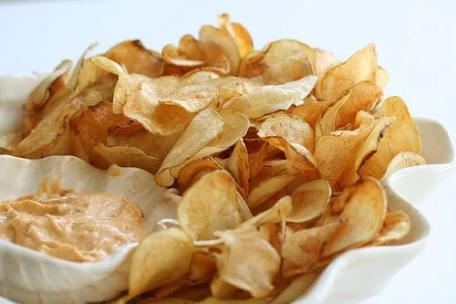

Tahea's Recipes
Homemade Potato Chips

Description
A simple and easy snack recipe, Potato Chips! Everyones fan favorite!
Ingredients
Steps
- Thinly Slice the Potatoes into slices
- Add oil to pot and boil until 350 degrees
- Fry potatoes until golden brown and crispy
- Sprinkle Salt